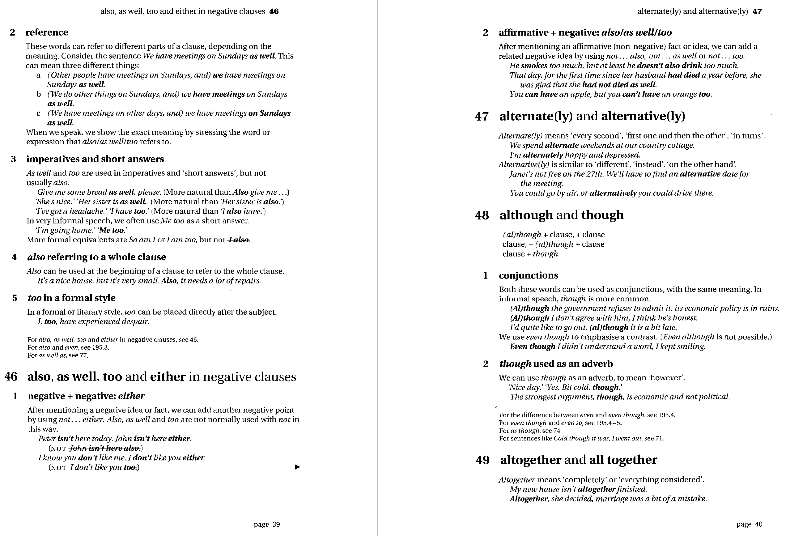
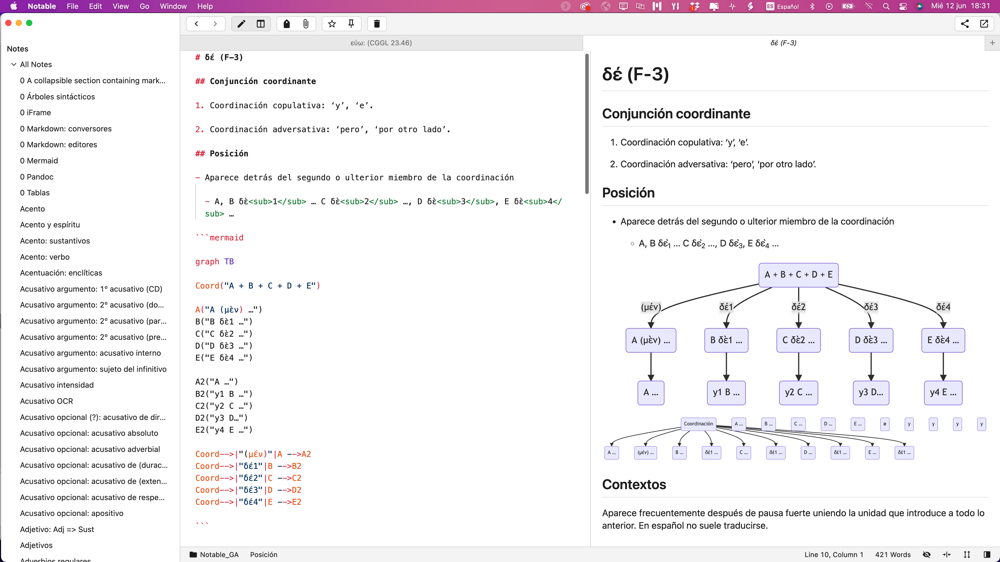
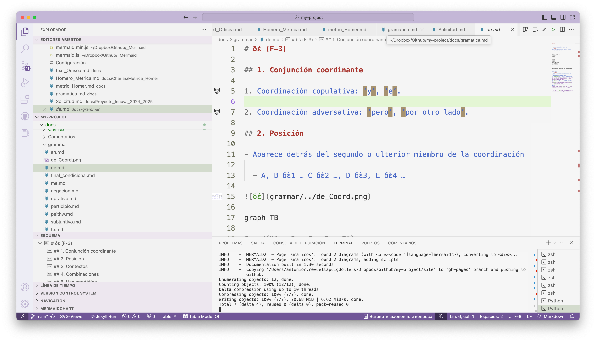
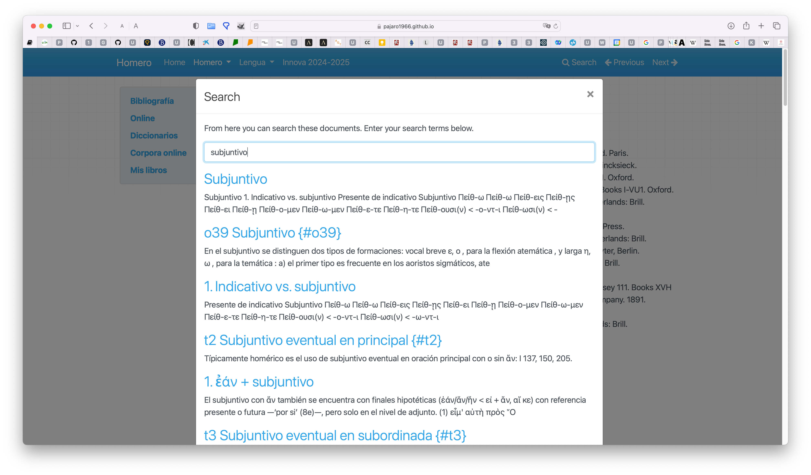
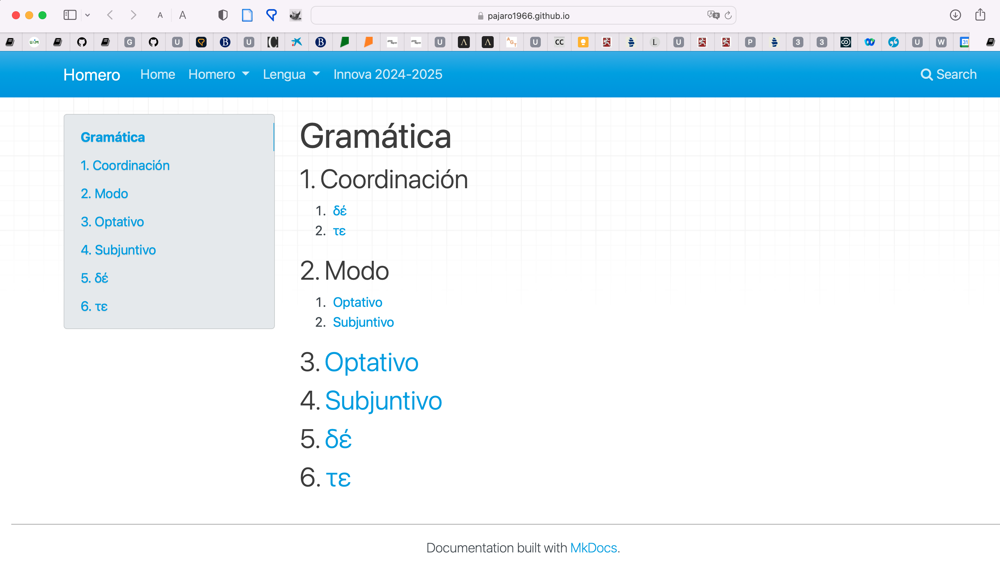
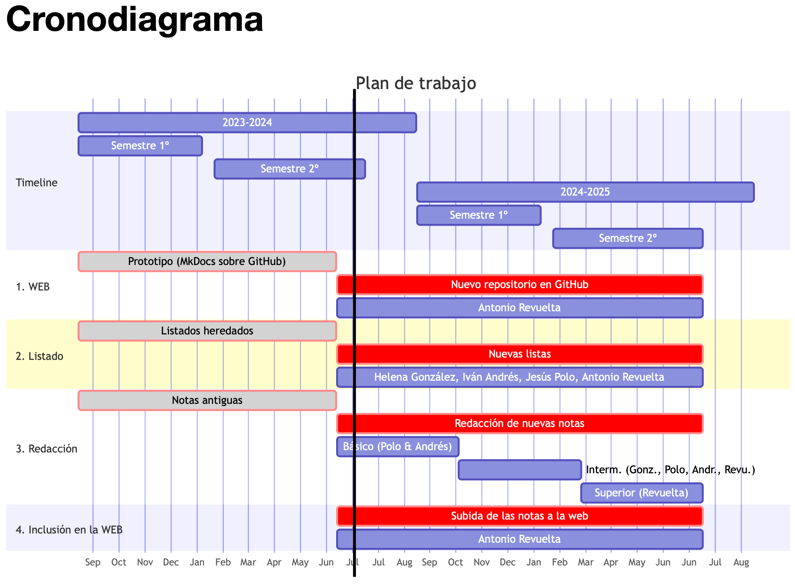

Solicitud¶
1. Financiación¶
| TIPO | DESCRIPCIÓN | CUANTÍA |
|---|---|---|
| Aplicaciones | 2 licencias de Filemaker | 1268,00 € |
| Servicios | 1. GitHub Enterprise; 2. servicios de hosting | 400,00 € |
| Materiales |
2. Descripción corta¶
El presente proyecto tiene como objetivo la creación de una gramática práctica del griego antiguo (i) adaptada a las exigencias de la impartición de esta lengua en los grados ofrecidos por el Departamento de Filología Clásica y (ii) a disposición libre de los alumnos a través de un repositorio online creado en GitHub con MkDocs. Sigue el patrón de gramáticas prácticas de otras lenguas como la ‘Practical English Usage’ de Michael Swan, está ordenada alfabéticamente por tópicos (como si fuera un diccionario), está basada en el sistema de las notas atómicas (Zettelkasten) y su alojamiento en GitHub con MkDocs permite que la notas sean comentadas por cualquier persona, de manera que pueden ser mejoradas de manera colaborativa tanto por profesores como por alumnos. Dado su carácter digital, dichas notas se pueden vincular a la web de cualquier asignatura creada por otros profesores. En las siguientes páginas de GitHub se puede ver (i) un ejemplo de aplicación de este tipo de publicación en red tanto de la gramática (ii) como de la asignatura 17784, y (iii) también se ha creado un duplicado de esta solicitud con material gráfico adicional en la misma plataforma:
3. Objetivos¶
3.1. Descripción de la situación a mejorar¶
En la actualidad existe abundante material para el estudio de la gramática del griego antiguo, pero presenta dos problemas fundamentales: (i) es demasiado básico o —por el contrario— demasiado complejo para que los alumnos puedan aplicarlo a los textos que traducen durante cuatro años; y (ii) está diseminado en multitud de manuales y diccionarios. Esto hace que el alumno pierda demasiado tiempo en encontrar la información precisa para resolver un problema gramatical concreto que le haya surgido al traducir un texto o que tenga que procesar demasiado material bibliográfico para lograrlo. Eso es así incluso en obras muy recientes como las de Emde Boas et alii (2019) y Dolores Jiménez (2020), a la que el propio coordinador de este proyecto ha contribuido con seis capítulos y parte del índice. Incluso los índices más detallados (normalmente no lo son) no permiten la localización ágil, rápida y precisa del fenómeno correspondiente que se necesita para dar respuesta a un problema concreto. Además, estas obras carecen de numerosa información que se encuentra en otras obras gramaticales o está relegada a los diccionarios.
3.2. Objetivos generales y específicos¶
Para hacer frente a esta situación han surgido en el campo de la adquisición de segundas lenguas obras como el ‘Practical English Usage’ de Swan, que organizan el material gramatical como entradas léxicas ordenadas alfabéticamente como en un diccionario y que proporcionan la información apropiada para los estudiantes. Estas explicaciones se centran en los problemas fundamentales a los que se enfrentan los estudiantes del inglés como segunda lengua (L2). Adicionalmente, esta ordenación alfabética permite mezclar fácilmente información léxica y gramatical en el mismo formato (los límites entre lo léxico y lo gramatical son frecuentemente borrosos), de modo que el estudiante encuentra en una misma obra información de todo tipo necesaria para su progreso, como se puede ver en la siguiente imagen:

Así la obra que proponemos tendría en este orden de aparición, por ejemplo, entradas para fenómenos lexicogramaticales como los siguientes: activa (voz), acusativo (caso), aoristo (tema), dativo (caso), futuro (tema), futuro (tiempo), genitivo (caso), imperativo (modo), indicativo (modo), infinitivo (modo/formas no finitas), media (voz), nominativo (caso), optativo (modo), participio (formas no finitas), pasado (tiempo), pasiva (voz), presente (tema), presente (tiempo), subjuntivo (modo), tiempo, vocativo (caso), voz, δυσ-, πείθω, καί, ποιέω, τε, etc.
De esta manera, el alumno podría ir a este diccionario lexicogramatical y encontrar directamente en la entrada correspondiente la cuestión que desea consultar. Por ejemplo, si quiere saber algo sobre el subjuntivo, no tendría (i) que pensar ni saber qué es el subjuntivo (un modo), (ii) encontrar la sección del modo (normalmente dentro de las categorías del verbo) y (iii) localizar el apartado dedicado al subjuntivo, sino que iría directamente a la entrada ‘subjuntivo’ de esta gramática práctica, la cual le diría qué es el subjuntivo (un modo), qué forma morfológica tiene (su conjugación) y cómo se usa en griego (en prohibiciones, en determinadas subordinadas, etc.).
Nuestro propósito general es crear un diccionario gramatical práctica online que recoja el material que empleamos en nuestras clases. De manera secundaria queremos dar mayor unidad y coherencia al estudio del griego antiguo en nuestro departamento y poner a diposición de sus estudiantes y profesores este material.
3.3. Posibilidades de éxito¶
Tenemos a nuestra disposición tanto el material como los procedimientos para llevar a cabo el proyecto.
(1) Material disponible. Como se puede ver en los modelos aportados, el sistema ya ha sido probado y funciona perfectamente. Los miembros del proyecto contamos con numeroso material en forma de notas que se han puesto a disposición de los alumnos en el pasado mediante diversos procedimientos. En la siguiente imagen pueden ver parte de las numerosas notas que se han creado en Markdown y que se han utilizado en clase y puesto a disposición de los alumnos mediante el gestor de notas Notabl:
Figura. Notas gramaticales y lexicológicas del griego antiguo en Notable.

(2) Método probado. El método que se va a aplicar en este proyecto (publicación en GitHub mediante MkDocs) ha sido utilizado este año en una asignatura y ha permitido dotar de mayor organización y claridad a todos los materiales empleados en la misma. Este proyecto se solicita para aplicar este método de manera sistemática a todo el material gramatical y léxico necesario para todas las asignaturas impartidas por los docentes y que los profesores ya tenemos y utilizamos habitualmente en clase: se trata tan solo de la extensión de un metodo ya probado en una asignatura a todas las asignaturas de griego antiguo de manera transversal.
- Sitio web de la asignatura 17784 ‘Lengua Griega IV’: https://pajaro1966.github.io/My_Mk_Docs/
3.4. Justificación bibliográfica¶
(1) Griego antiguo. Es imposible dar una bibliografía básica mínima sobre la gramática y léxico del griego antiguo. Mencionamos dos de las obras más recientes, en las que se puede encontrar referencia a un gran número de obras básicas (Emde Boas et alii 2019 y Jiménez López 2020).
- Emde Boas, E. van, Rijksbaron, A., Huitink, L., & Bakker, M. de. (2019). The Cambridge grammar of classical Greek. Cambridge University Press.
- Jiménez López, M. D. (Ed.). (2020). Sintaxis del griego antiguo. 1. Introducción, sintaxis nominal, preposiciones, adverbios y partículas. 2. Sintaxis verbal, coordinación, subordinación, orden de palabras. Consejo Superior de Investigaciones Científicas.
(2) Gramáticas prácticas. Aunque existen modelos para otras lenguas, la gramática práctica del inglés de Swan (2017), con sus sucesivas ediciones y mejoras, es probablemente el ejemplo más claro del modelo que queremos aplicar al griego.
- Swan, M. (2017). Practical English Usage. Oxford University Press.
(3) Zettelkasten. Las notas de que consta la gramática siguen el modelo del Zettelkasten (‘caja de notas’ o ‘caja de tarjetas’). Una introducción muy útil este sistema de organización de información se puede encontrar en Ahrens (2017) y Kadavy (2021). Probablemente el exponente moderno máximo de este sistema de gestión de información es el prolífico sociólogo y filósofo Niklas Luhmann (1992), que lo utilizó de manera sistemática en su obra investigadora y lo describió en un breve artículo. Por supuesto, el sistema de los Zettelkasten tiene numerosos precedentes, particularmente notorio es el caso del biólogo Carl Linnaeus, cuyas cajas de notas (Zettelkasten) se pueden ver en su casa de Hammarby.
- Ahrens, Sönke (2017): Das Zettelkasten-Prinzip. Erfolgreich wissenschaftlich Schreiben und Studieren mit effektiven Notizen. Books on Demand GmbH.
- Kadavy, David (2021): Digital Zettelkasten : Principles, Methods, & Examples. Kadavy, Inc.
- Luhmann, Niklas (1992): ‘Kommunikation mit Zettelkästen. Ein Erfahrungsbericht’. En: André Kieserling (ed.), Universität als Milieu. Kleine Schriften, Haux, Bielefeld.
(4) Gestores digitales de notas. Existen numerosos sistemas digitales para las gestionar de notas. Algunnos son más apropiados para el uso individual, como, por ejemplo, Notable (usado por el coordinador), Notion u Obsidian. Sin embargo, para el uso colectivo es más útil emplear sistemas de documentación como MkDocs, que permite crear una web estática desde archivos Markdown y subirlos a un repositorio en GitHub. Para gestionar todo el proceso empleamos desde hace años Visual Studio Code. La siguiente imagen muestra la subida a GitHub del material creado para esta solicitud:
Figura: Gestión de las notas mediante VS Code:

- Filemaker: https://www.claris.com
- GitHub: https://github.com
- Markdown: https://www.markdownguide.org
- MkDocs: https://www.mkdocs.org
- Notable: https://notable.app
- Notion: https://www.notion.so/es-es/product
- Obsidian: https://obsidian.md
- Pandoc: https://pandoc.org, https://pandoc.org/try/
- Python 3.10 (versión usada por MkDocs): https://www.python.org
- Visual Studio Code: https://code.visualstudio.com
4. Diseño del proyecto¶
4.1. Metodología¶
Como en otros proyectos solicitados por el coordinador, se cuenta ya con un modelo que se puede encontrar en la siguiente URL y que se utilizará en las siguientes explicaciones:
- Modelo de gramática online: https://pajaro1966.github.io/My_Mk_Docs/gramatica/
En caso de que por cuestiones técnicas los avaluadores no puedan acceder a él, diríjanse, por favor, al coordinador para solventar el problema (antonio.revuelta@uam.es).
Las notas de que consta la gramática práctica se escriben en Markdown (lenguaje de marcado ligero), se almacenan en una base de datos en Filemaker para su gestión, y se muestran a los alumnos en una página web originada en un repositorio en GitHub usando Mkdocs en el entorno de programación Visual Studio Code. El proyecto sigue el sistema Zettelkasten para la creación de notas atómicas y gestión de las mismas. Estas notas contienen la información individual que se quiere proporcionar a los alumnos. Se crean en Markdown para su fácil conversión posterior a cualquier formato usando, por ejemplo, Pandoc y posteriormente se suben en formato MkDocs a un repositorio de GitHub que crea una página web a la que acceden los alumnos. Dado que MkDocs es un sistema de documentación online, incluye un sistema de búsqueda automático que permite encontrar todas las fichas que contienen el tópico que esté buscando el alumno (acceso directo), como se puede ver en la siguiente captura de pantalla:

En el modelo propuesto en la web mencionada se tratan los siguientes tópicos: coordinación, modo, optativo, subjuntivo, δέ, y τε. Todos ellos cuentan con una entrada propia en la web y el alumno puede encontrarlos buscando por orden alfabético o por medio del buscador (search). Como el optativo y el subjuntivo son dos modos, las mismas fichas de ambos aparecen también como una subsección bajo la entrada ‘Modo’. Hay que señalar que se trata exactamente del mismo archivo, de manera que, una vez se modifica por ejemplo el archivo ‘optativo’, tanto la entrada principal ‘Optativo’ como la subentrada correspondiente bajo ‘Modo’ se modificarán por igual. Lo mismo sucede con δέ (‘y, pero’) y τε (‘y’): ambas tienen una entrada principal propia, pero también aparecen como subentradas bajo la entrada ‘Coordinación’, dado que ambas son conjunciones copulativas. La siguiente imagen muestra el procedimiento descrito:

4.2. Descripción de las tareas¶
Las tareas son, por tanto, las siguientes:
(1) Nuevo repositorio exclusivo. La creación de un nuevo repositorio en GitHub de MkDocs para albergar la gramática. El prototipo mostrado se ha alojado en la página de una asignatura, pero creemos que el proyecto debe tener su propio sitio.
(2) Listado de tópicos. Creación de un listado de tópicos que los alumnos deben conocer. Ya contamos con el listado de tópicos para los dos primeros cursos, dado que el Área de Griego del Departamento de Filología Clásica lo creó hace años y lo empleamos de manera sistemática en la impartición de las diversas asignaturas de textos desde 1º a 2º curso. Sin embargo, añadiremos más entradas o notas que hayan creado los profesores involucrados y aquellas que requieran los alumnos en las asignaturas que impartimos.
(3) Redacción de las notas o entradas. Es necesario redactar las fichas correspondientes a cada tópico. Esta tarea será realizada por los tres miembros del equipo. Parte de ellas ya están redactadas, de modo que no se parte de cero. Cada tópico se puede fragmentar en fichas individuales —siguiendo el sistema del Zettelkasten— para poder incluirlas en diferentes secciones; p.ej. δέ es tanto una conjunción copulativa como adversativa.
(4) Incorporación de las notas al repositorio en Github. Esas fichas serán subidas al sistema (repositorio de GitHub) por parte del coordinador del proyecto siguiendo un formato muy parecido al del modelo mencionado previamente para que los alumnos puedan acceder a ellas a través de la web generada por la plataforma.
4.3. Plan de trabajo y plazos de desarrollo¶
El siguiente cronodiagrama da una idea de las tareas realizadas hasta el momento, las que están pendientes, las personas encargadas de ellas y los plazos de ejecución aproximada. La línea vertical negra señala el día actual, a la izquierda se encuentran las tareas realizadas (en gris) y a la derecha las que están pendientes (rojo) separadas por clase y ordenadas temporalmente. También se indica el profesor encargado de cada tarea (azul). El coordinador se encargará tanto de la creación del nuevo repositorio (1) como de la inclusión en él de las notas creadas (4). Los tes miembros del proyecto se encargarán conjuntamente de la creación del listado de tópicos tratados. La creación de las notas se hará teniendo en cuenta las asignaturas impartidas: (i) los profesores Polo y Andrés redactarán las notas básicas (han impartido o impartirán asignaturas de 1º y 2º); (iii) los tres miembros del proyecto redactarán las notas del nivel intermedio, y el coordinador la notas de nivel avanzado (véase las asignaturas de 4º y máster que impartirá). La inclusión de las notas en el repositorio se realizará inmediatamente después de su redacción, siguiendo el ritmo de las asignaturas que se impartirán, de manera que los alumnos puedan acceder a ellas lo antes posible, empezando por los conocimientos más básicos para pasar a los intermedios y finalmente a los superiores.

4.4. Recursos¶
El equipo de trabajo cuenta con los conocimientos, recursos materiales y técnicos, y solo se necesita financiación para la suscripción anual a (i) GitHub, (ii) Filemaker y (iii) a un dominio en algún servidor externo que permita establecer un acceso más controlado a los usuarios. Aunque se ha aportado un presupuesto, este es aproximado porque en algunos casos variará según el tráfico de datos que generemos. Esta disponibilidad de conocimiento (knowhow) y recursos técnicos queda demostrada en la web donde se aloja copia de esta solicitud. Esta web se ha creado para reunir el material de la asignatura ‘Lengua griega IV’ (17784, Grupo 310), dedicada a la traducción y comentario de textos épicos, principalmente de la Ilíada y la Odisea.
4.5. Resultados esperados¶
(1) Simplificación. El principal resultado esperado es que los alumnos —con independencia de su nivel de conocimiento y curso— tengan durante todos los años un material de estudio fácilmente accesible, reunido en un único espacio, adaptado a sus necesidades, actualizado y que puedan consultar rápidamente. Actualmente las fuentes son dispersas, no adaptadas a sus necesidades y en muchos casos en otras lenguas.
(2) Adecuación a las necesidades de los alumnos. Por otro lado, el proyecto se beneficiará de la actividad de los propios estudiantes, ya que se incorporarán fichas que incluyan la dudas que les surjan a los alumnos durante el curso y que los miembros del proyecto no hayan contemplado inicialmente. La utilidad de gramáticas prácticas como la de Swan reside en el hecho de que son el reflejo de la actividad de autor como profesor de inglés como segunda lengua y en que, por esa razón, incide principalmente en las dificultades con las que se encuentran los alumnos, como muestra la biografía de Michael Swan.
(3) Unificación y coherencia. Dado que las diversas asignaturas de griego antiguo están impartidas por un gran número de profesores y que cada uno les da diferentes informaciones sobre los mismos tópicos, con diferentes materiales y fuentes bibliográficas, este proyecto disminuirá la diversidad de materiales, la complejidad de su manejo y aportará mayor claridad, unidad y coherencia al estudio y aprendizaje del griego antiguo.
(4) Reutilización. Dado que las fichas son atómicas y digitales, se pueden incorporar a otros proyectos. Así, por ejemplo, el coordinador empleará estas notas para otras asignaturas enlazándolas a las web que cree para ellas.
5. Justificación de la relevancia y pertinencia de la innovación docente¶
5.1. Alcance¶
Como en otros proyectos del coordinador, el alcance de la mejora no se limita a una única asignatura ni a las cinco (5) impartidas por los miembros del proyecto en los dos grados principales en que participa el Departamento de Filología Clásica, sino que se extiende a todos los grados y másterres del Departamento de Filología Clásica en los que se imparte griego antiguo (al menos 12 asignaturas): se trata de un proyecto totalmente transversal y no centrado en una asignatura concreta, aunque parte y está ligado a las asignaturas específicas de los miembros del proyecto. Supondrá, por tanto, una mejora en todos los cursos de los títulos de grado y posgrado impartidos por nuestro departamento: (a) Grado en Estudios Clásicos y de la Antigüedad (Antes Grado en Ciencias y Lenguas de la Antigüedad); (b) Doble Grado en Historia del Arte y Estudios Clásicos y de la Antigüedad (Antes Doble Grado en Historia del Arte y Ciencias y Lenguas de la Antigüedad); (c) Máster Universitario en Estudios Clásicos.
El resultado final esperable es la creación, con el tiempo, de una gramática del griego antiguo en formato electrónico (probablemente epub), cuya utilidad y usabilidad es mucho mayor que la de un libro en formato impreso. Como MkDocs es un generador de documentación en formato de sitio estático, se puede transformar fácilmente en diversos formatos electrónicos empleando diversos plugins. Asimismo, los archivos se pueden convertir en epub empleando SIGIL (creación de epub) y Calibre (conversión a cualquier formato). El coordinador tiene experiencia en la creación de libros electrónicos para las asignaturas de griego moderno.
5.2. Posible impacto¶
El impacto esperado es doble. Por un lado, pretendemos simplificar, unificar y hacer accesible a nuestros alumnos el conocimiento gramatical del griego antiguo y asegurarnos de que acceden fácilmente a él y que las explicaciones les resultan útiles para sus necesidades y comprensibles para su nivel. En la actualidad el estudio gramatical del griego (como el de cualquier lengua en general en esta o cualquier otra universidad) está atomizado en diversas asignaturas prácticas (traducción de textos griegos) y teóricas (lingüística griega) impartidas por numeros profesores a lo largo de cuatro (4) cursos. Por otro lado, pretendemos crear material que solucione las dudas que tienen nuestros alumnos y que no aparecen resueltas en los libros de consulta y de las que en algunos casos no somos conscientes los propios profesores hasta que los alumnos preguntan. Se va a tener en cuenta la retroalimentación por parte de los alumnos y se van a crean entradas en la gramática para explicar esas dudas específicas. El resultado final esperado es disminuir la curva de aprendizaje y contribuir a que los alumnos aprendan más invirtiendo menos tiempo y esfuerzo.
5.3. Aplicabilidad¶
(1) Antecedentes. Este sistema ya está siendo usado por el coordinador en las asignaturas de textos griegos que ha impartido durante los últimos años. Ha creado un gran número de notas gramaticales y léxicas, y las ha utilizado en clase y puesto a disposición de los alumnos mediante programas de organización de notas, como por ejemplo, Notable, aunque se han probado también otros como JupyterLab, Notion u Obsidian. En la siguiente imagen se pueden ver las notas creadas y puestas a disposición de los alumnos por medio de Notable compartido a través del DropBox del coordinador:
(2) Aplicación práctica en una asignatura completa. Se trata de un sistema probado tanto por el gran número de notas existentes como por las diferentes herramientas de manejo de notas probadas. El sistema que se propone (MkDocs alojado en GitHub) ha sido puesto en práctica este año con gran éxito entre los alumnos, que han tenido todos los recursos de la asignatura ‘Lengua Griega IV’ (17784, Grupo 310) unificados en un solo sitio web: https://pajaro1966.github.io/My_Mk_Docs/
De acuerdo con lo expuesto, la aplicabilidad está asegurada. Lo único que hay que hacer es introducir en el sistema desarrollado y probado, de manera unificada y centralizada, la información gramatical y léxica de la que disponemos y que los miembros del proyecto tenemos cada uno en nuestros ordenadores y en diversas plataformas (Moodle, edX, etc.). Hay que señalar que —por diversas razones técnicas que no es posible discutir aquí— las posibilidades de MkDocs publicado en GitHub son mucho mayores que las de cualquier otras plataforma educativa habitual, si bien el usuario debe tener muchos más conocimientos técnicos y dedicar mucho más tiempo a la infraestructura.
- Jupyter: https://jupyter.org
- Notable: https://notable.app
- Notion: https://www.notion.so/es-es/product
- Obsidian: https://obsidian.md
6. Justificación del equipo¶
En el punto § 4.3 se detallan las tareas asignadas a cada miembro del equipo. En este apartado describiremos su idoneidad para el proyecto que se está describiendo.
(1) Asignaturas impartidas. Los tres miembros del proyecto imparten y han impartido asignaturas de griego antiguo en todos los niveles y cursos de los diferentes grados, y en concreto el próximo años impartirán las siguientes:
- 1º curso 1º semestre: Lengua griega I (20101): Jesús Polo
- 1º curso 2º semestre: Lengua griega II (20105): Jesús Polo
- 2º curso 1º semestre: Lectura y traducción de texto griegos I (20109): Jesús Polo
- 2º curso 2º semestre: Lectura y traducción de textos griegos II (20113): Jesús Polo
- 3º/4º curso 2º semestre: Lingüística griega: Antonio Revuelta.
- Máster de posgrado: Comentario avanzado de textos griegos (33557)
(2) Dedicación a la lingüística y a la enseñanza del griego. Los tres compartimos nuestra dedicación e interés no solo en la lingüística del griego antiguo, sino que impartimos asignaturas de todos los niveles, y el profesor Iván Andrés Alba dispone además del Título de Experto en Metodología Docente Universitaria (UAM), obtenido tras defender un proyecto de cambio docente sobre el griego antiguo como lengua hablada en el aula universitaria.
- Iván Andrés Alba: https://uam.academia.edu/IvanAndresAlba
- Jesús Polo Arrondo: https://uam.academia.edu/JesusFPoloArrondo
- Antonio R. Revuelta Puigdollers: https://uam.academia.edu/antoniorevuelta
En particular el coordinador es autor de seis (6) capítulos (286 páginas) de una nueva sintaxis del griego antiguo aparecida en la editorial del CSIC (cf. Jiménez López 2020) y el propósito de este proyecto surgió en la presentación del libro en la Fundación Pastor de Estudios Clásicos el 15 de diciembre de 2021. El formato de libro impreso impone una serie de restricciones en la ordenación del material (solo se puede ordenar de una forma), y en la accesibilidad y recuperabilidad de la información que contienen. Pese a los detallados índices y a la creación de una edición digital en formato epub, el acceso y localización de la información son difíciles. La idea de presentar la información en formato de fichas ordenadas alfabéticamente surgió en esa presentación de dicha sintaxis y pretende solucionar el problema de adquirir informacióon cuando se carece del conocimiento suficiente para saber dónde localizarla en las obras ordenadas de manera tradicional.
- Fundación Pastor: https://fundacionpastor.es/la-fundacion/memoria-de-actividades/
- Jiménez López, M.D. (ed.) (2020). Sintaxis del griego antiguo (Vol. 2, pp. 899–939). CSIC. http://libros.csic.es/product_info.php?products_id=1466
(3) Enseñanza del griego antiguo como lengua activa. Tanto el coordinador como el profesor Andrés Alba llevan tiempo dedicado a la enseñanza del griego antiguo como lengua hablada y han organizado, entre otras actividades, un curso online con este objetivo y han participado en diversos proyectos de innovación docente dedicados a la creación de materiales didácticos para la enseñanza del griego antiguo y del griego moderno:
- Vocabulario básico de frecuencia del griego antiguo FYL_019.23_INN 2023/2024 INNOVA.
- Zero Dramas: Grupo de Teatro Grecolatino FYL_004.23_INN 2023/2024 INNOVA.
- Uso docente del sistema de consulta y gestión de corpus Sketch Engine en asignaturas de posgrado con orientación lingüística y filológica FYL_018.22_INN 2022/2023 INNOVA.
- Audiolibros en griego y latín FYL_008.22_INN 2022/2023 INNOVA Coordinador.
- Curso SPOC de Griego Antiguo como Lengua Activa FYL_005.21_INN 2021/2022 INNOVA Coordinador.
- Preparación para los exámenes oficiales de griego moderno del KEG: A1-A2 FYL_008.19_INN 2019/2020 INNOVA Coordinador Ver certificado Ver certificado
- Textos interlineales griegos FYL_032.18_INN 2018/2019 INNOVA Coordinador.
- Kybernetes “Curso 0” de Griego Clásico FyL-L1/9.14 2014/2015 IMPLANTA Miembro.
- Kybernetes “Curso 0” de Griego Clásico FyL_7.15 2015/2016 IMPLANTA Miembro.
- Kybernetes. Introducción al Griego Clásico FYL_012.16 2016/2017 IMPLANTA Miembro.
7. Impacto de la mejora¶
Para medir el impacto de la mejora se va a tener en cuenta los resultados académicos de los alumnos, las estadísticas de uso del sitio web, la retroalimentación específica de los alumnos, y un sistema de encuestas.
(1) Resultados de los alumnos. El impacto de mejora se va a poder visualizar en los resultados de las múltiples asignaturas que los docentes imparten en los diversos grados. Los miembros del equipo de trabajo llevan impartiendo las mismas asignaturas varios años y tienen un registro estadístico de los resultados que se compararán con los del próximo año, sobre todo con los del segundo semestre, que será cuando los alumnos tendrán a su disposición una versión más completa de la gramática en red.
(2) Estadísticas automáticas. Podremos evaluar el uso real del material del proyecto de manera automática recurriendo a diferentes herramientas analíticas tanto de GitHub como de MkdDocs para seguir el tráfico de las páginas web. Así, por ejemplo, MkDocs puede enlazar el sitio creado a Google Analytics. Comparando los resultados académicos con el uso del sitio web por parte de cada alumno podremos establecer el efecto del uso de este material en la evolución de los alumnos. Además, podremos usar la frecuencia de uso para saber si el sitio web se emplea o no y si, por tanto, es atractivo y útil o no para los alumnos.
(3) Retroalimentación de los alumnos. MkDocs permite incorporar al sitio creado la retroalimentación por parte de los alumnos de diferentes maneras. Se puede dotar al sitio de caraterísticas de blogging o se puede habilitar en cada nota la opción de ser comentada por el usuario. El uso de la retroalimentación específica a cada nota resultará muy útil, ya que nos permitirá corregir y mejorar las notas de manera que se adapten a las necesidades de los alumnos y a su nivel de comprensión.
(4) Encuestas a los alumnos. Se realizarán encuestas a los alumnos para saber el grado de satisfacción con el sitio web creado y su opinión sobre su utilidad para resolver las dudas que les surjan y sobre su facilidad de manejo.